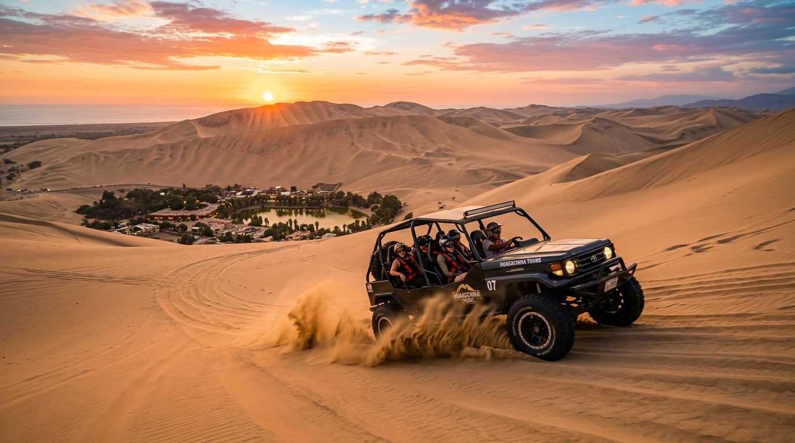

Detalles de la Aventura
El Full Day Paracas + Huacachina combina las dos mayores atracciones del sur del Perú en una sola jornada: la fauna marina de las Islas Ballestas y las dunas gigantes del único oasis natural de Sudamérica.
Comienzas a las 8:00 AM a bordo de una lancha hacia las Islas Ballestas. Luego te trasladamos en transporte climatizado al Oasis de Huacachina, con tiempo para almorzar frente a la laguna, y a las 4:00 PM subes al buggy tubular para el circuito de dunas y sandboard al atardecer.
Es la opción definitiva para la ruta sur: puedes regresar a Paracas o quedarte en Huacachina y continuar hacia Nazca o Arequipa, con tu equipaje viajando seguro en nuestro transporte.
Itinerario Detallado
-
directions_boat
8:00 AM - Islas Ballestas
Navegación de 2 horas para conocer el Candelabro y la fauna de las islas.
-
directions_bus
10:30 AM - Viaje Paracas a Ica
Traslado en transporte turístico climatizado hacia la ciudad de Ica y el Oasis de Huacachina.
-
restaurant
12:30 PM - Almuerzo y Paseo
Tiempo libre en el Oasis de Huacachina para caminar, almorzar frente a la laguna o comprar souvenirs.
-
toys
4:00 PM - Buggies e Ica Sunset
Tour de adrenalina pura en tubulares areneros y sandboarding por las dunas al atardecer.
Preguntas Frecuentes
¿Cuánto cuesta el tour Paracas + Huacachina en un día?
El tour cuesta S/ 190 por persona e incluye lancha a Ballestas, traslado Paracas–Huacachina, buggies tubulares y sandboard. Aparte se pagan los impuestos de muelle y SERNANP (S/ 16 aprox.) y la tasa municipal del desierto (S/ 4 aprox.). Total real aproximado: S/ 210, sin cobros ocultos.
¿Puedo quedarme en Huacachina al finalizar el tour?
¡Sí! Muchos viajeros continúan su ruta al sur hacia Nazca o Arequipa. Puedes finalizar el tour en Huacachina con tu equipaje a bordo de nuestro transporte sin costo extra. Avísanos al reservar.
¿Qué pasa con mis maletas durante el día?
Las maletas viajan seguras en la maletera del transporte climatizado que te lleva de Paracas a Huacachina, por lo que no tienes que preocuparte por dejarlas en ningún hotel.
¿El tour incluye comida?
No, pero el itinerario deja tiempo libre en el oasis, donde hay una amplia variedad de restaurantes para almorzar comida criolla, marina o internacional frente a la laguna.
¿Es un día muy agotador?
Es un día completo (de 7:45 AM a 6:30 PM aprox.) pero bien balanceado: navegación tranquila por la mañana, traslado con descanso al mediodía y la adrenalina de los buggies recién a las 4:00 PM. La mayoría lo termina con energía para la puesta de sol.
¿Qué debo llevar?
Cortavientos para la lancha, bloqueador, lentes de sol, gorra, zapatillas cerradas para el sandboard y efectivo para impuestos y almuerzo. Todo lo demás (chalecos, tablas, cera) lo ponemos nosotros.
Reservar Tour
S/ 190
Por persona
- check_circle Navegación en lancha a Islas Ballestas
- check_circle Traslado interprovincial Paracas-Ica (Huacachina)
- check_circle Tour en carros areneros tubulares en Huacachina
- check_circle Tablas y guía para la práctica de sandboarding
- check_circle Seguro de viaje y asistencia en los puntos
- error Impuestos combinados de muelle y SERNANP (S/ 16.00 aprox.)
- error Tasa municipal de desierto en Huacachina (S/ 4.00 aprox.)
- error Almuerzo y bebidas
* Salida diaria a las 7:45 AM desde el muelle de Paracas. Retorno opcional a Paracas o puedes quedarte en Ica (Huacachina) al finalizar el tour a las 6:30 PM.
Por qué elegir SolyMar Paracas
Seguridad Garantizada
Equipos modernos y guías certificados con seguros de pasajeros para tu tranquilidad.
Guía Local Experto
Guías nativos bilingües que te mostrarán los secretos mejor guardados de la Reserva.
Agencia Registrada
Somos operadores turísticos formales autorizados por las entidades pertinentes del Perú.
Atención Personalizada
Coordinamos tu reserva por WhatsApp de inmediato resolviendo cualquier consulta.
¿Listo para comenzar tu aventura?
Contáctanos hoy mismo para asegurar tus espacios en esta maravillosa experiencia. ¡Tenemos salidas diarias!
Contactar por WhatsApp